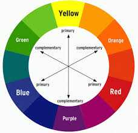
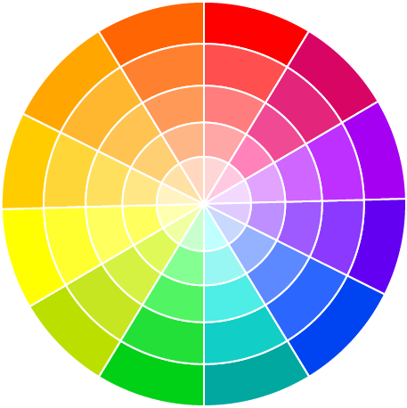

Colours are a fundamental aspect of our perception of the world around us. They are the result of the interaction between light and the objects that reflect or emit that light. Colour is not a property of an object itself, but a characteristic created in the mind of the observer based on how different wavelengths of light are absorbed, reflected, or transmitted by those objects. This complex process involves physics, biology, and even psychology, as our brains interpret the stimuli coming from the environment. At a basic level, colour arises when light, which is made up of electromagnetic waves, strikes an object. Light contains all the colours of the visible spectrum, ranging from red to violet, each corresponding to different wavelengths of light. When light hits an object, the object absorbs certain wavelengths and reflects others. The wavelengths that are reflected are what we perceive as the colour of that object. For example, an apple appears red because it absorbs all wavelengths except for red, which it reflects to our eyes. Our eyes are equipped with photoreceptor cells called rods and cones that are sensitive to light. Cones, in particular, are responsible for detecting colour. There are three types of cone cells in the human eye, each sensitive to a specific range of wavelengths: one for red light, one for green, and one for blue. The combination of the stimulation of these three types of cones allows us to perceive the full spectrum of colours, a phenomenon known as "trichromatic vision." Our brain then processes the signals from these cones, enabling us to distinguish between the millions of colours in the world. Colour perception is not only influenced by the physical properties of light and the eye but also by the context in which the colours are viewed. This means that colours can look different depending on surrounding colours, lighting conditions, or even the individual’s own vision. For instance, a dress can appear gold and white to one person and blue and black to another due to differences in how their eyes process light. This phenomenon highlights how subjective colour perception can be, demonstrating that our experience of colour is as much psychological as it is physical. Colours also have a profound impact on human emotions and psychology. Different colours can evoke specific feelings or associations. For instance, red is often associated with passion, energy, or danger, while blue tends to be seen as calming or serene. Green represents nature, growth, and harmony, while yellow can evoke happiness or caution. This emotional response to colours is not purely cultural, as studies have shown that certain colour associations appear to be universal, although the meanings can vary across different societies. In art and design, colour plays a vital role in communication. Artists use colour to create mood, draw attention, or convey meaning. Colour theory is an essential part of design, as it helps to guide the harmonious use of colours, the creation of contrast, and the balancing of light and dark tones. In marketing, colours are strategically chosen to influence consumer behavior and perceptions of products. In conclusion, colours are much more than mere visual phenomena. They are the product of light interacting with objects and our sensory systems, but their significance extends far beyond physical processes. Colours shape how we perceive the world, communicate, and experience emotions. Whether in nature, art, or everyday life, colours enrich our world in profound and meaningful ways.

